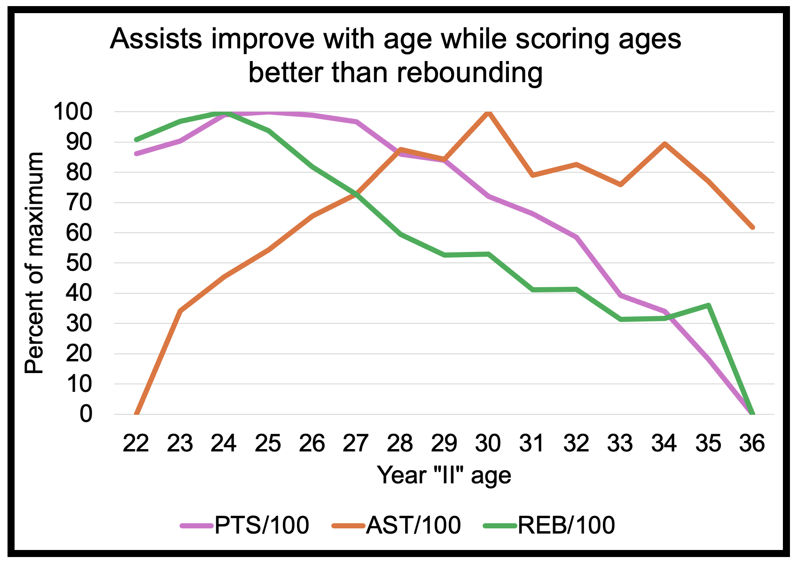
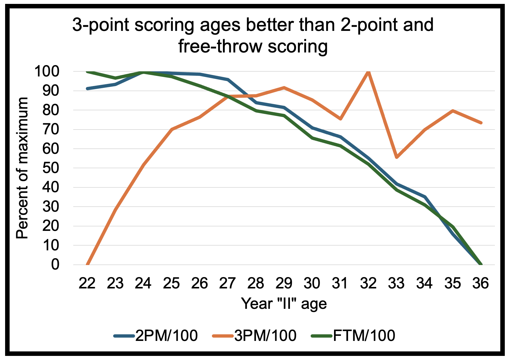
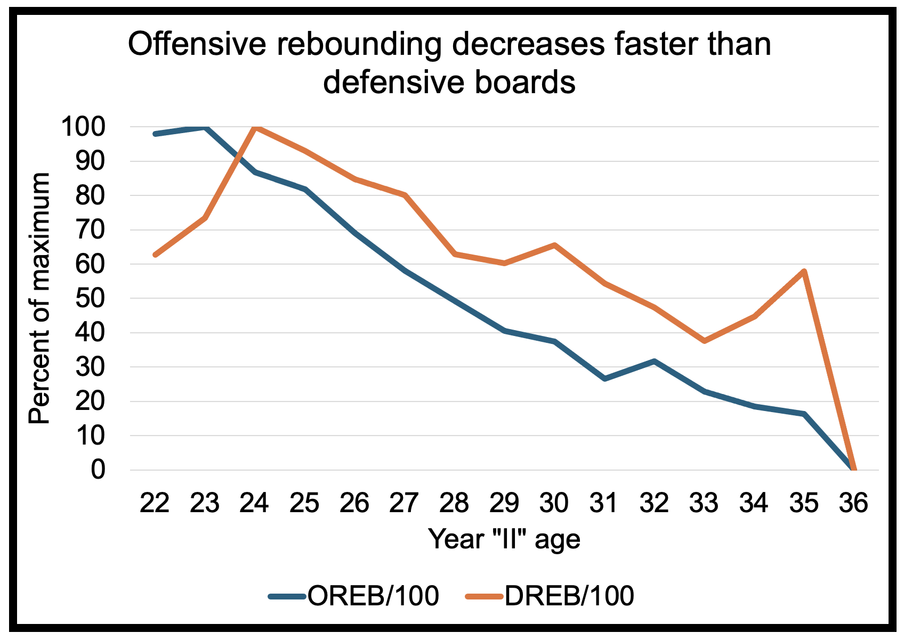
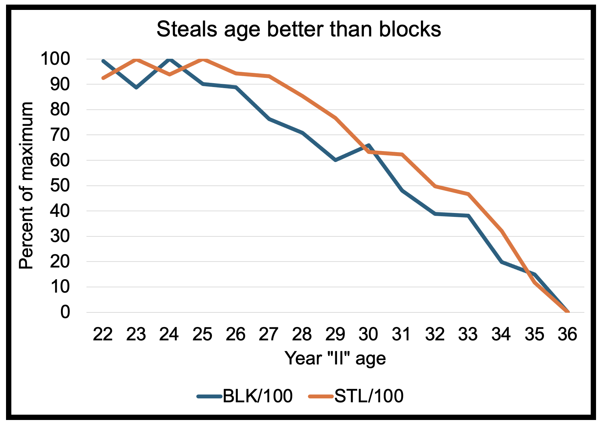
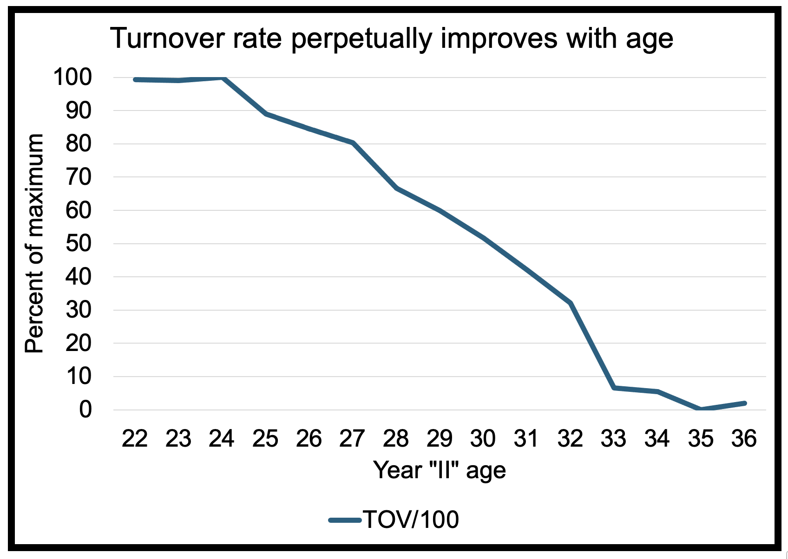

How Do WNBA Players Age? (Part III)
An analysis of how different play styles distinctly age in the WNBA
November 2025
For the final analysis on aging, we will examine how different play styles distinctly age. In part I, I showed that the average WNBA player hits their maximum productivity at age 25 followed by a progressive decline. Considering that WNBA players may become a restricted free agent at age 26 (if they complete their rookie contract) and an unrestricted free agent at 27, they may enter free agency with their best days behind them. Again, due to various reasons, every player is different and may evade Father Time better. This leads to the question, can we predict which players may better delay aging?
We pace-adjusted every statistic and tracked how different statistics change for WNBA players year-after-year using the same methodology delineated in part I. We first examined how scoring, rebounding, and assisting change.
Surprisingly, assists/100 possessions improve throughout most of a player's career, peaking at 30 before only weakly declining. Conversely, rebounding rate tends to peak at 24 and declines sharper than scoring which peaks at 25 but decreases slower than rebounding. Thus, assists age better than scoring which age better than rebounding.

This finding seems intuitive since players lose athleticism as they age. Rebounding and scoring require explosiveness, agility, and jumping while passing relies more on basketball IQ and vision which seem less prone to aging. Thus, if you are a GM exploring guard options in free agency, a pass-first guard may be better for a long-term deal than a scoring guard. Furthermore, if looking at bigs, a scoring big may be better for a multiyear contract than one who primarily rebounds.
We can investigate further how scoring ages. If we look at how a player's free throws, two-point, and three-point scoring rates change, we see that three-point scoring is markedly immune to aging effects compared to two-point and free throw scoring. Three-point scoring continually improves until 29 and doesn't peak until 32. Conversely, two-point scoring climaxes at 24 before sharply decaying by age 28. Players who primarily score by drawing fouls are most prone to scoring decreases as they age, experiencing a reduction in free throw make rate by age 25 that perpetually exacerbates.

These data suggest that if shopping for a scorer in free agency, three-point shooters may be the safest option for a long-term contract. Hypothetically, if a 27-year-old three-point specialist signs a 3-year deal, their core skill of long-range shooting may very well improve throughout the duration of the contract. Meanwhile, age 27 players who mainly score via two-point shots and free throws may have already peaked in their scoring rate and be on the verge of a steep decline early into their deal. These data make sense considering 2-point scoring and drawing fouls mainly rely on slashing into the interior of the paint which require agility and quickness which wane with age.
Offensive rebounds decay faster than defensive rebounds. Thus, if there is a player who is specialized in crashing the offensive glass, they may age worse than players who mainly get defensive boards.

Examining defensive statistics shows that steal rate ages better than blocks which peaks at the beginning of a player's career.

Lastly, if we examine turnover rate, we see that this perpetually decreases throughout a player's career. Therefore, if a team has a productive young player who commits extensive turnovers, it may be best to stay patient with them as their turnover woes should subside with experience.

Tracking how statistics temporally change may explain why guards age better than bigs as discussed in Part II. In 2025, forwards/centers in the WNBA had more rebounds, two-point attempts, free throw attempts, and blocks per possession than guards who had more assists, three-pointers, and steals per possession than bigs. The statistics that guards outpaced bigs on age better than the statistics bigs outperformed guards on – assists age slower than rebounds, three-pointers decline less quickly than two-pointers, steals fall slower than blocks – hence the different positional aging.
Overall, while the general WNBA player reaches peak productivity at 25, various play styles will exhibit distinct aging curves. Pass-first, three-point shooters tend to have the best chance at retaining their impact throughout their career while rebounding, rim protectors who score mostly from drawing fouls and two-pointers seem more prone to aging. While some players will defy their predicted aging curves, these data are a good beginning for prognosticating player productivity.
This is Part III of a series on WNBA player aging: